Link naar pagina: https://www.werkenbij.alkmaar.nl/aanvragen-vergeten-wachtwoord-prs
Problemen met contrast, invoervelden en dialoogvensters zijn in de vorige secties beschreven.
Wij hebben de website werkenbij.alkmaar.nl onderzocht tussen 25 november en 2 december 2025. Op dit moment zijn 33 van de 55 succescriteria als voldoende beoordeeld. In dit rapport lees je wat er bij de overige 22 nog fout gaat, en hoe je dat kunt verbeteren.
In opdracht van
Buiten scope:
Exporteer alle bevindingen als CSV-bestand. Je kunt het in een (online) spreadsheet inladen om met je team samen te werken.
Exporteer alle bevindingen als Jira-compatibel CSV-bestand. Je kunt het direct importeren via Jira > Issues > Import issues from CSV.
Houd per bevinding bij of het is opgelost. Je voortgang wordt opgeslagen in jouw browser. Niemand anders kan je resultaat zien.
Geen bevindingen gevonden voor dit filter.
Link naar pagina: https://www.werkenbij.alkmaar.nl/aanvragen-vergeten-wachtwoord-prs
Problemen met contrast, invoervelden en dialoogvensters zijn in de vorige secties beschreven.
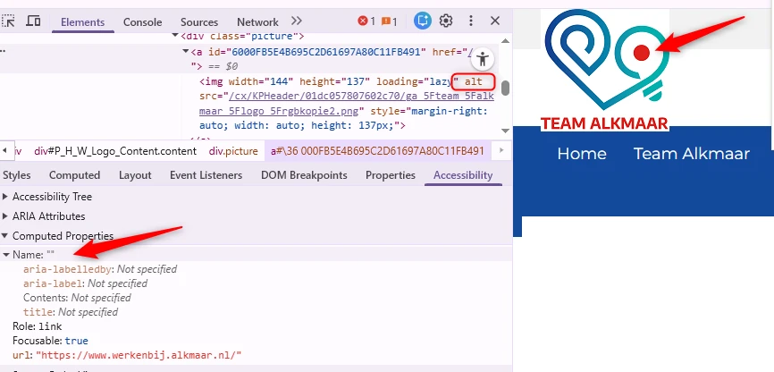
Het logo “Team Alkmaar” bovenaan de website heeft geen tekstalternatief.
Als het alt-attribuut van een afbeelding leeg is (alt=""), negeren schermlezers de afbeelding. Door de alt-tekst niet in te vullen, zeg je eigenlijk: deze afbeelding is puur decoratief, geeft geen informatie. Er wordt dan dus niets voorgelezen. Daarom moet je informatieve afbeeldingen zoals een logo altijd een alt-tekst geven.
Het logo functioneert ook als link, waardoor nog andere succescriteria worden geschonden: de bestemming van de link is niet duidelijk (succescriterium 2.4.4), de zichtbare tekst staat niet in de linknaam waardoor deze niet met stem kan worden geactiveerd (succescriterium 2.5.3), en de link heeft geen toegankelijke naam (succescriterium 4.1.2).
Voeg een alt-tekst toe die de volledige tekst van het logo bevat - “Team Alkmaar”.
Op alle pagina’s van de website ontbreekt een skiplink.
Er moet een manier zijn om delen van een pagina over te slaan, zoals het navigatiemenu en andere elementen die op meerdere pagina’s terugkomen. Je gebruikt hier een skiplink voor. Daarmee kun je vaste blokken met herhalende inhoud overslaan. Een skiplink moet de eerste link op de pagina zijn. Deze link mag verborgen zijn, maar moet zichtbaar worden zodra hij focus krijgt.
Voeg een skiplink toe waarmee bezoekers herhalende delen van de pagina over kunnen slaan.
Zorg dat de skiplink:
Er is geen tweede manier om de pagina’s van deze website te vinden.
Alle pagina’s die op de website staan moeten op meerdere manieren gevonden kunnen worden.
Zorg dat de webpagina’s op meerdere manieren bereikbaar zijn. Dat mag via een zoekveld, een sitemap of een inhoudsopgave.
Op veel pagina’s van de website staan socialmedialinks in de header. Deze links hebben een targetgebied (het klikbare gebied) dat kleiner is dan 24×24 CSS-pixels.
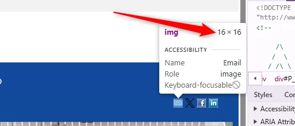
De oppervlakte waarop geklikt kan worden (het ‘doelgebied’) bij links en andere interactieve elementen moet groot genoeg zijn. Anders is het voor bezoekers met een motorische beperking lastig om precies op het juiste element te klikken. Daarom moeten links óf een doelgebied hebben van minimaal 24 bij 24 CSS-pixels, óf voldoende afstand tot andere klikbare elementen. Om te bepalen of klikbare elementen ver genoeg uit elkaar staan, teken je een denkbeeldige cirkel met een diameter van 24 pixels in het midden van het doelgebied. Deze cirkel mag nergens de (denkbeeldige cirkel van) een ander doelgebied raken.
Zorg ervoor dat deze links minimaal 24 bij 24 CSS-pixels groot zijn of voldoende afstand hebben tot andere klikbare elementen.
Op veel pagina’s van de website staan links die een contrastprobleem hebben wanneer ze in hover- of focus-toestand zijn. De tekst erop wordt wit op een blauwe achtergrond (#31BCAE) en de contrastratio wordt te laag: 2,4:1.
Hier zijn enkele voorbeelden, maar dit is geen volledige lijst:
Deze tekst is kleiner dan 24px en niet vetgedrukt, daarom moet het contrast minimaal 4,5:1 zijn. Op deze pagina staat een instructie die uitlegt hoe je kleurcontrast kunt testen: https://properaccess.nl/hoe-test-ik-kleurcontrast/.
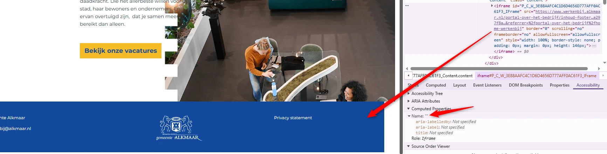
Op alle pagina’s van de website staat onderaan een iframe zonder een beschrijving die voor een schermlezer zichtbaar is. Het attribuut title ontbreekt.
Iframes moeten een duidelijke beschrijving hebben, meestal via het title-attribuut. De title moet kort het type en het doel van de ingesloten inhoud beschrijven. De beschrijving moet uniek en betekenisvol zijn. Dankzij deze beschrijving kunnen bezoekers met hulpsoftware bepalen of het de moeite waard is om de inhoud van het iframe te verkennen.
Voeg het title-attribuut aan het iframe-element toe, en zet daar een tekst in waaruit blijkt welk type inhoud het iframe bevat, en waar het inhoudelijk over gaat.
Bijvoorbeeld, <iframe title="Sectie met contactgegevens van Gemeente Alkmaar"</iframe>.
Wanneer de website voor het eerst wordt geopend, verschijnt onderaan elke pagina het bericht over cookies. De “x”-iconen die als sluitknoppen functioneren naast de tekst “Meer weten?” hebben onvoldoende kleurcontrast. De grijze (#666666) iconen op de blauwe (#13499C) achtergrond hebben een contrastratio van 1,5:1, wat lager is dan de vereiste 3,0:1 voor grafische elementen die informatie overbrengen.
Het kleurcontrast van informatieve iconen moet minimaal 3,0:1 zijn.
Zorg dat deze informatieve elementen voldoende contrast hebben. Op deze pagina staat een instructie die uitlegt hoe je kleurcontrast kunt testen: https://properaccess.nl/hoe-test-ik-kleurcontrast/.
Wanneer de website voor het eerst wordt geopend, verschijnt onderaan elke pagina het bericht over cookies. In dit bericht is de toetsenbordfocus niet zichtbaar op de “x”-knoppen.
De toetsenbordfocus moet altijd zichtbaar zijn op interactieve elementen zoals links, knoppen en invoervelden die met het toetsenbord focus kunnen krijgen. Bezoekers die met het toetsenbord navigeren moeten goed kunnen zien op welke plek van de pagina ze zijn. Anders weten ze niet op welk moment ze op Enter moeten drukken om een knop of link te bedienen.
Een vergelijkbaar probleem doet zich voor bij een knop met een sloticoon (“Login”) in het mobiele menu wanneer de website op een klein scherm wordt bekeken.
Zorg dat de toetsenbordfocus zichtbaar is op de genoemde elementen. Op deze pagina staat een instructie om zelf focuszichtbaarheid te testen: https://properaccess.nl/hoe-test-ik-focus-zichtbaarheid/.
Op alle pagina’s wordt in de footer het logo “Gemeente Alkmaar” zonder tekstalternatief weergegeven. Een leeg alt-attribuut zorgt ervoor dat deze afbeelding wordt genegeerd door hulpsoftware.
Dit logo is informatief en moet daarom een alt-tekst krijgen die vermeldt dat het om het logo van Gemeente Alkmaar gaat. Omdat het logo geen link is, voeg dan ook het woord ‘Logo’ toe aan de alternatieve tekst - ‘Logo van Gemeente Alkmaar’.
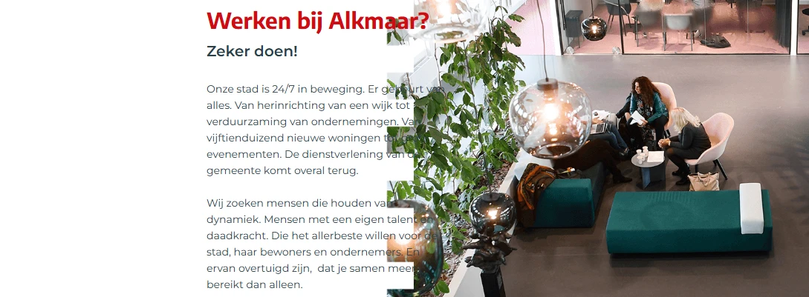
Op veel pagina’s van de website stroomt de lay-out bij smallere schermbreedtes (1280px en lager) niet correct mee. Tekst en afbeeldingen overlappen elkaar en het contrast van de tekst wordt onvoldoende, waardoor delen van de inhoud onleesbaar worden.
Zorg dat de lay-out zich aanpast aan de grootte van het scherm. Zorg dat het contrast van tekst voldoet aan het vereiste minimum: voor tekst met een lettergrootte tot 24 px of vet moet het minimaal 4,5:1 zijn, en voor grote tekst vanaf 24 px of vet minimaal 3,0:1.
Wanneer de website op een klein scherm wordt bekeken, verschijnt de menuknop bovenaan de pagina. Deze knop opent een mobiel menu, maar heeft problemen met de toetsenbordfocus. Hoewel de knop visueel bovenaan de pagina staat, komt het toetsenbord er niet als eerste bij en moet de bezoeker alle interactieve elementen op de pagina doorlopen om uiteindelijk bij de menuknop te komen. Dit is niet logisch. Een ander probleem is dat bezoekers momenteel met het toetsenbord uit het geopende mobiele menu kunnen navigeren. De toetsenbordfocus verschuift dan naar de onderliggende pagina terwijl het menu open blijft staan.
Bij dit soort menu’s moet de toetsenbordfocus goed worden ingesteld. Wanneer het menu actief is, moet de focus binnen het menu blijven en mag deze niet op de onderliggende pagina terechtkomen. Dit kan worden opgelost door de focus binnen het menu te houden, totdat de bezoeker op de sluitknop heeft geklikt of op de ESC-toets heeft gedrukt. Het is ook mogelijk om het menu automatisch te sluiten zodra de toetsenbordfocus eruit gaat.
Een logische toetsenbordvolgorde moet aanwezig zijn op de pagina wanneer deze op een klein scherm wordt bekeken. Zorg ervoor dat de focus in het menu blijft totdat de bezoeker dit sluit door op de sluitknop te klikken of de ESC-toets in te drukken. Je kunt het menu ook automatisch sluiten als de focus het menu verlaat.
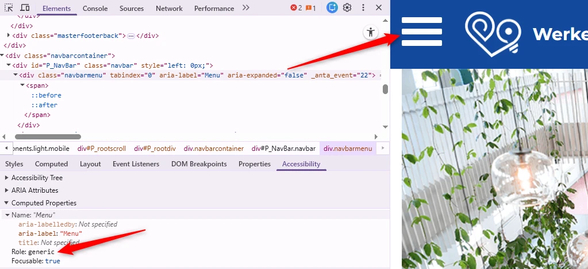
Op een klein scherm mist de menuknop bovenaan de juiste toegankelijke rol. Hierdoor wordt deze door hulpsoftware niet als knop herkend.
De juiste rol voor de menuknop zou button (knop) moeten zijn, omdat je er een actie mee uitvoert: het openen of sluiten van het menu. Als de knop niet de juiste rol heeft, kan een schermlezer of ander hulpmiddel de knop niet goed herkennen, waardoor deze moeilijker te gebruiken is voor mensen die deze hulpsoftware gebruiken.
Zorg dat de menuknop de juiste rol krijgt, door het button-element ervoor te gebruiken, of role="button" toe te voegen.
Op een klein scherm verschijnt een menuknop om het mobiele menu te openen. Het attribuut aria-expanded op de knop wordt echter niet correct bijgewerkt om de toestand van het menu weer te geven. Het blijft “false” zelfs wanneer het menu open is.
Dit attribuut zou de waarde “true” moeten krijgen als het menu zichtbaar is en “false" als het gesloten is.
Wanneer de tekst op de meeste pagina’s van deze website tot 200% wordt ingezoomd, is de link “Privacy statement” in de Footer niet zichtbaar en niet te bedienen. Een ander probleem is dat onderaan de pagina de tekst “Bedankt voor het invullen. Klik hieronder op Sollicitantendossier om terug te gaan naar de startpagina.” verschijnt (ook als de bezoeker het sollicitatieformulier niet heeft ingevuld). De tekst overlapt het logo “Team Alkmaar”.
Dezelfde problemen treden op bij 400% zoom.
Zorg dat alles nog werkt als een bezoeker inzoomt tot 200% of 400% op een scherm van 1280 bij 1024 pixels.
Link naar pagina: https://www.werkenbij.alkmaar.nl/vacaturebeschrijving/beleidsmedewerker-babw
Problemen met tekstcontrast, strong-elementen in plaats van koppen, de GIF-animatie, toetsenbordfocus en andere punten zijn in de vorige secties beschreven.
Link naar pagina: https://www.werkenbij.alkmaar.nl/portal-over-het-bedrijf/cao
Het probleem met het contrast van links is in de vorige secties beschreven.
Wanneer deze pagina wordt bekeken op een schermresolutie van 1280 bij 1024 pixels en wordt ingezoomd tot 400%, raken de kop “Collectieve Arbeidsvoorwaarden” en de tekst eronder deels verloren.
Zorg dat alles nog werkt en leesbaar is als je inzoomt tot 400% op een scherm van 1280 bij 1024 pixels.
Link naar pagina: https://www.werkenbij.alkmaar.nl/
Het probleem met het contrast van links is in de vorige sectie beschreven.
Link naar pagina: https://www.werkenbij.alkmaar.nl/vacaturebeschrijving/griffiemedewerker-raadsondersteuner
Problemen met linkcontrast en alinea’s zijn in de vorige secties beschreven.
Op deze pagina staat een GIF-animatie die automatisch wordt afgespeeld en niet kan worden gepauzeerd of gestopt.
Het kan storend zijn voor mensen met een cognitieve beperking als een video, GIF of animatie op een website automatisch gaat spelen. De bewegende inhoud zorgt voortdurend voor afleiding terwijl ze de tekst op de pagina proberen te lezen.
Dezelfde probleem staat op pagina https://www.werkenbij.alkmaar.nl/vacaturebeschrijving/beleidsmedewerker-babw.
Er moet een manier zijn voor bezoekers om dit soort multimedia te stoppen, pauzeren of verbergen. Dit geldt voor alle bewegende, knipperende, scrollende of automatisch actualiserende content die tegelijk met andere informatie wordt getoond, automatisch start en langer dan 5 seconden speelt.
em-element is gebruikt voor opmaak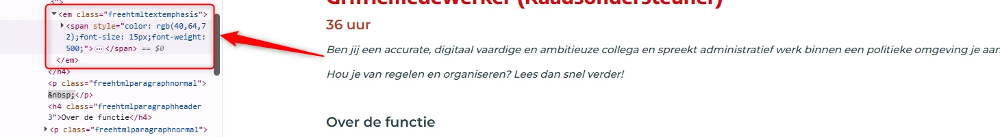
Op deze pagina wordt onder de kop “Griffiemedewerker (Raadsondersteuner)” het em-element onjuist gebruikt voor opmaak in de tekst die begint met “Ben jij een accurate…”.
Het em-element heeft een semantische waarde: het geeft een bepaalde betekenis aan de tekst die erin staat. Dit element geeft aan dat de tekst extra nadruk moet krijgen. Om die reden kun je dit element beter niet gebruiken om alleen een visueel effect te bereiken (cursieve tekst).
Verwijder de onnodige em-elementen en gebruik CSS om de tekst schuingedrukt te maken. Je kunt het i-element gebruiken om tekst schuin te drukken.
Op deze pagina hebben twee interactieve elementen met het label “Solliciteren” niet de juiste toegankelijke rol en naam.
Elk HTML-element heeft standaard een rol. Dit betekent dat het element bepaalde eigenschappen en functies heeft om informatie aan de bezoeker te geven of om informatie van de bezoeker te ontvangen. De rol bepaalt dus wat het element doet. Schermlezers en andere hulpmiddelen moeten de correcte rol van elk element op een webpagina kennen. Zo kunnen ze op een slimme manier met het element omgaan en aan de bezoeker uitleggen wat het element doet.
Dezelfde probleem staat op pagina https://www.werkenbij.alkmaar.nl/vacaturebeschrijving/beleidsmedewerker-babw met dezelfde "Solliciteren"-elementen.
Zorg dat de elementen een juiste toegankelijke rol hebben, bijvoorbeeld button of link. Na het toevoegen van de juiste rol moet de knop een toegankelijke naam hebben.
Op deze pagina zijn twee “Solliciteren”-knoppen niet met het toetsenbord te bedienen.
Hetzelfde probleem met de “Solliciteren”-knoppen staat op pagina https://www.werkenbij.alkmaar.nl/vacaturebeschrijving/beleidsmedewerker-babw.
Zorg dat de knop zowel met de spatiebalk als de Enter-toets bediend kan worden.
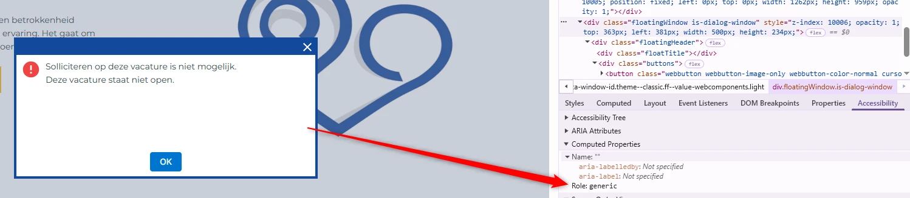
Op deze pagina openen knoppen met het label “Solliciteren” hetzelfde dialoogvenster. Dit dialoogvenster mist zowel een juiste rol als een toegankelijke naam.
Schermlezers kunnen hierdoor niet doorgeven dat het om een dialoogvenster gaat, en wat de inhoud ervan is.
Een vergelijkbaar probleem staat op de volgende pagina’s:
Voeg twee attributen toe aan het dialoogvenster: een aria-label met een duidelijke beschrijving van de inhoud (aria-label="Beschrijving van de inhoud") en role="dialog".
Op deze pagina openen de knoppen met het label “Solliciteren” een dialoogvenster. In dit dialoogvenster is de toetsenbordfocus niet zichtbaar op de “x” (“Sluiten”)-knop.
De toetsenbordfocus moet altijd zichtbaar zijn op interactieve elementen zoals links, knoppen en invoervelden die met het toetsenbord focus kunnen krijgen. Bezoekers die met het toetsenbord navigeren moeten goed kunnen zien op welke plek van de pagina ze zijn. Anders weten ze niet op welk moment ze op Enter moeten drukken om een knop of link te bedienen.
Een vergelijkbaar probleem staat op de volgende pagina’s:
Zorg dat de toetsenbordfocus zichtbaar is op de genoemde elementen.
Op deze pagina openen de knoppen met het label “Solliciteren” een dialoogvenster. De toetsenbordfocus kan op dit moment uit het geopende dialoogvenster ontsnappen en naar de onderliggende pagina gaan.
Bij dit soort dialoogvensters moet je de toetsenbordfocus goed instellen. Als het venster actief is, moet de toetsenbordfocus binnen het venster blijven, en mag deze niet op de onderliggende pagina terechtkomen.
Een vergelijkbaar probleem staat op de volgende pagina’s:
Je lost dit op met Javascript door de focus binnen het venster te houden totdat de bezoeker op de sluitknop heeft geklikt of op de ESC-toets heeft gedrukt. Je kunt er ook voor kiezen om het venster automatisch te sluiten op het moment dat de focus eruit gaat.
Op deze pagina staan onder de kop “Meer weten?”, naast “Telefoonnummer” en “E-mailadres”, links die niet de juiste toegankelijke rol en naam hebben.
Elk HTML-element heeft standaard een bepaalde rol. Dit betekent dat het element bepaalde eigenschappen en functies heeft om informatie aan de bezoeker te geven of om informatie van de bezoeker te ontvangen. De rol bepaalt dus wat het element doet. Schermlezers en andere hulpmiddelen moeten de correcte rol van elk element op een webpagina kennen. Zo kunnen ze op een slimme manier met het element omgaan en aan de bezoeker uitleggen wat het element doet.
Hetzelfde probleem met vergelijkbare links staat op pagina https://www.werkenbij.alkmaar.nl/vacaturebeschrijving/beleidsmedewerker-babw.
Zorg dat de link de juiste rol heeft door een van de onderstaande oplossingen toe te passen:
a-element gebruiken: als dit nog niet zo is, gebruik dan het a-element om de link te maken. Dit element heeft standaard al de rol van link.role=”link” toevoegen: als er een ander element voor de link is gebruikt (meestal niet aan te raden), voeg dan het attribuut role=”link” toe om de rol van dit element expliciet te definiëren.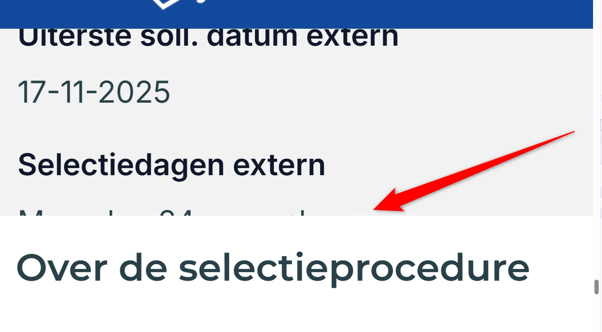
Wanneer deze pagina wordt bekeken op een schermresolutie van 1280 bij 1024 pixels en wordt ingezoomd tot 400%, raakt de tekst boven de kop “Over de selectieprocedure” deels verloren.
Hetzelfde probleem staat op pagina https://www.werkenbij.alkmaar.nl/vacaturebeschrijving/beleidsmedewerker-babw.
Zorg dat alles nog werkt en leesbaar is als je inzoomt tot 400% op een scherm van 1280 bij 1024 pixels.
Link naar pagina: https://www.werkenbij.alkmaar.nl/login?url=%2F
Problemen met contrast, invoervelden en dialoogvensters zijn in eerdere secties beschreven.
Wanneer deze pagina wordt bekeken op een schermresolutie van 1280 bij 1024 pixels en wordt ingezoomd tot 400%, is het woord “SOLLICITANTENPORTAAL” te breed en wordt het niet afgebroken, waardoor het buiten de rechterrand van het viewport valt.
Als een lang woord niet binnen beeld past bij een scherm van 320 pixels, moet het worden afgebroken. Er mag geen horizontale scrollbar komen. Los dit bijvoorbeeld op met de CSS-eigenschap word-break.
Link naar pagina: https://www.werkenbij.alkmaar.nl/portal-over-het-bedrijf/cao
Link naar PDF: https://www.werkenbij.alkmaar.nl/openen-downloadbaar-bestand-prs/personeelshandboek
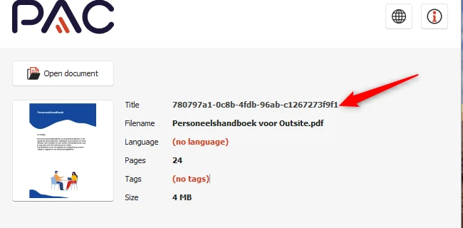
Dit pdf-document heeft in de bestandseigenschappen de titel “780797a1-0c8b-4fdb-96ab-c1267273f9f1”, wat de inhoud van het document niet goed beschrijft.
De titel van een pdf-document moet het onderwerp of doel van het document duidelijk beschrijven. Hierdoor kunnen bezoekers snel en makkelijk bepalen of het document relevant is.
Dit kun je aanpassen in de bestandseigenschappen van het bronbestand of van het pdf-document.
In de metadata van deze pdf is de taal niet ingesteld.
Het is belangrijk om de taal in te stellen. Dan kan hulpsoftware de informatie uit het bestand met de juiste uitspraakregels voorlezen.
Dit pdf-document mist codes, waardoor de inhoud ontoegankelijk is voor schermlezers.
Bovendien kunnen wij de pdf hierdoor niet volledig onderzoeken. Het gaat om alle succescriteria die met de pdf-codelaag te maken hebben, zoals semantische koppen en alternatieve teksten bij afbeeldingen. Als je dit oplost, is het dus mogelijk dat er nieuwe toegankelijkheidsproblemen ontstaan die nu nog niet aan het licht zijn gekomen.
Voeg codes toe aan het document die de structuur van het document weergeven.
Ga naar Bestand. Kies Opslaan als Adobe PDF (als je Acrobat hebt) of ga naar Meer → Exporteren → PDF/XPS-document maken. In het venster dat opent, klik je op Opties. Zet een vinkje bij Documentstructuurtags voor toegankelijkheid en bij Bladwijzers maken met koppen. Op deze manier kunnen gebruikers met het toetsenbord snel van sectie naar sectie springen. Dit werkt alleen wanneer echte kopstijlen zijn gebruikt.
Ga naar Bestand → Opslaan als, kies PDF in het keuzemenu en selecteer Best voor elektronische distributie en toegankelijkheid, dat gebruikmaakt van Microsoft online service. Op Mac worden bladwijzers automatisch op basis van de koppen gegenereerd, zonder dat hiervoor instellingen hoeven te worden aangepast.
Link naar pagina: https://www.werkenbij.alkmaar.nl/portal-over-het-bedrijf/privacy-statement
Geen toegankelijkheidsproblemen gevonden.
Link naar pagina: https://www.werkenbij.alkmaar.nl/portal-over-het-bedrijf/sollicitatieprocedure
Geen toegankelijkheidsproblemen gevonden.
Link naar pagina: https://www.werkenbij.alkmaar.nl/aanmaken-sollicitatie-incl-autorisatie-prs/alkmaar-sollicitatie?VcSn=557
Problemen met koppen zijn in de vorige secties beschreven.
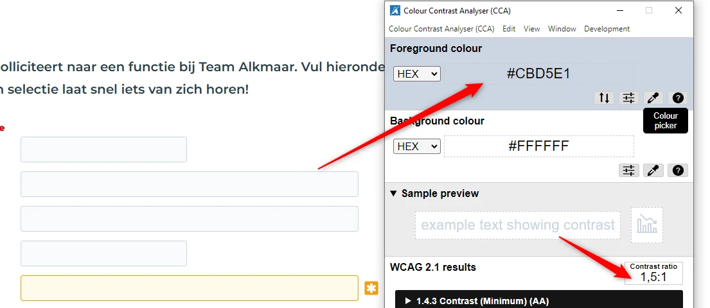
Op deze pagina staat een formulier. De invoervelden daarin hebben een laag contrast. De contrastratio tussen de grijze (#CBD5E1) rand en de witte achtergrond van de pagina is 1,5:1, en voor verplichte velden is de contrastratio tussen de gele (#F59E0B) rand en de witte achtergrond 2,1:1.
Dezelfde problemen staan op pagina's https://www.werkenbij.alkmaar.nl/login?url=%2F en https://www.werkenbij.alkmaar.nl/aanvragen-vergeten-wachtwoord-prs.
De randen van interactieve elementen zoals invoervelden moeten minimaal een contrast van 3,0:1 hebben met de achtergrond.
Op deze pagina staan bij de verplichte velden gele stericonen. Dit zijn informatieve iconen, maar ze hebben onvoldoende kleurcontrast. De witte iconen op de gele achtergrond (#EF9A0B) hebben een contrastratio van 2,3:1, wat lager is dan de vereiste 3,0:1 voor grafische elementen die informatie overbrengen.
Het kleurcontrast van informatieve iconen moet minimaal 3,0:1 zijn.
Dezelfde problemen staan op pagina's https://www.werkenbij.alkmaar.nl/login?url=%2F en https://www.werkenbij.alkmaar.nl/aanvragen-vergeten-wachtwoord-prs.
Zorg dat deze informatieve elementen voldoende contrast hebben.
autocomplete-attribuut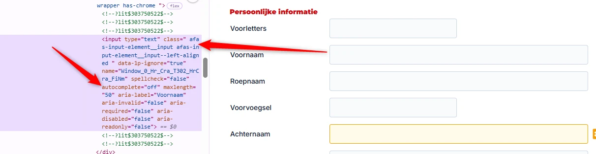
Op deze pagina heeft een formulier dat persoonsgegevens verzamelt (bijvoorbeeld voornaam, achternaam, e-mail, telefoonnummer en andere) invoervelden waarbij het attribuut autocomplete is ingesteld op “off”.
Invoervelden voor persoonlijke informatie zoals achternaam, e-mailadres of telefoonnummer moeten het autocomplete-attribuut met de juiste waarde hebben. Hierdoor kunnen browsers en hulpsoftware helpen bij het invoeren. Bijvoorbeeld door de velden al automatisch in te vullen.
Dezelfde problemen staan op de pagina’s https://www.werkenbij.alkmaar.nl/login?url=%2F (velden “Gebruikersnaam” en “Wachtwoord”) en https://www.werkenbij.alkmaar.nl/aanvragen-vergeten-wachtwoord-prs (veld “Gebruikersnaam”).
Gebruik de juiste waarden voor het attribuut autocomplete bij velden waarin persoonlijke informatie moet worden ingevoerd.Op deze pagina vind je meer informatie over autocomplete en welke waardes je verplicht moet gebruiken: https://www.w3.org/Translations/WCAG22-nl/#input-purposes.
legend-element voor de fieldsetOp deze pagina staat een formulier met meerdere secties. Secties zoals “Persoonlijke informatie” en “Contactgegevens” hebben een groepslabel, maar deze labels zijn niet programmatisch gekoppeld aan hun respectieve groepen. Hoewel een fieldset-element correct wordt gebruikt, ontbreekt een legend-element.
Je hebt het legend-element nodig om een label of naam aan de groep invoervelden te geven.
Voeg binnen het fieldset-element een legend-element toe en vul dit met de tekst van het groepslabel, bijvoorbeeld “Persoonlijke informatie”, zodat het doel van de groep duidelijk wordt aangegeven.
Op deze pagina wordt naast de velden “Geslacht” en “Privacy statement” een “x”-knop weergegeven wanneer er een waarde is geselecteerd. De knoppen zijn niet met het toetsenbord te bedienen. Deze elementen zijn uit de natuurlijke tabvolgorde verwijderd door gebruik van het attribuut tabindex met de waarde “-1”.
Dit is een probleem voor bezoekers die met de Tab-toets navigeren.
Wijzig de waarde van tabindex van “-1” naar “0” — tabindex="0" — zodat de knoppen in de logische toetsenbordfocusvolgorde worden opgenomen.
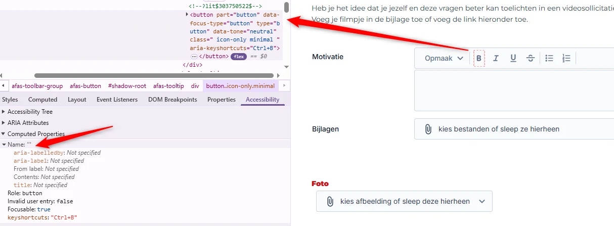
Op deze pagina missen meerdere knoppen een toegankelijke naam. Zie de knoppen van de opmaakwerkbalk boven het veld “Motivatie”, de knoppen met naar beneden gerichte pijliconen naast het veld “Bijlagen”, het geselecteerde bestand in de sectie “Bijlagen” en de waarde in het veld “Foto”.
Hierdoor begrijpen bezoekers die een schermlezer gebruiken niet wat de bestemming of de functie is van de knop.
Je kunt de toegankelijke naam geven via een aria-label of een andere techniek. Op deze pagina vind je een instructie hoe je zelf toegankelijke naam kunt testen: https://properaccess.nl/sc-4-1-2-wat-betekent-naam-rol-waarde/.
Op deze pagina wordt, wanneer een document is toegevoegd in de sectie “Bijlagen”, de bestandsindeling (bijvoorbeeld “PNG”) weergegeven als witte tekst op een gele (#F59E0B) achtergrond. De contrastratio is te laag: 2,1:1.
Deze tekst is kleiner dan 24px en niet vetgedrukt, daarom moet het contrast minimaal 4,5:1 zijn.
Op deze pagina bevat een formulier een invoerveld “E-mailadres”. Wanneer het veld onjuist wordt ingevuld, verschijnt er een “!”-icoon naast het veld. Zo’n foutmelding beschrijft het invoerprobleem niet voldoende.
Foutmeldingen moeten specifieker zijn en de aard van de fout uitleggen.
Voeg een beschrijvende foutmelding toe om gebruikers duidelijk te informeren over het specifieke probleem met hun invoer.
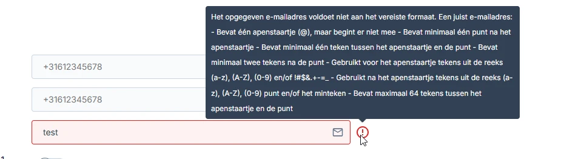
Op deze pagina bevat een formulier een invoerveld “E-mailadres”. Wanneer het veld onjuist wordt ingevuld, verschijnt een “!”-icoon naast het veld. Wanneer een bezoeker met de muis over dit icoon beweegt, opent een tooltip. Dit gebeurt niet bij toetsenbordfocus.
Hierdoor kunnen bezoekers die alleen met het toetsenbord navigeren de tooltip niet zien. De informatie in de tooltip is voor hen dus niet toegankelijk.
Zorg dat de tooltips ook openen als ze toetsenbordfocus krijgen.
Als een vacature niet meer beschikbaar is, verschijnt na het verzenden van het formulier onderaan de pagina een foutmelding: “Solliciteren op deze vacature is niet mogelijk. Deze vacature staat niet open.” De melding is rode (#EF4444) tekst op een witte achtergrond. De resulterende contrastratio is 3,8:1.
Foutmeldingen moeten net als andere teksten voldoen aan de minimale contrasteisen.
Zorg dat het contrast tussen de kleur van de foutmelding en de achtergrond minimaal 4,5:1 is.
Als een vacature niet meer beschikbaar is, verschijnt na het verzenden van het formulier onderaan de pagina een foutmelding: “Solliciteren op deze vacature is niet mogelijk. Deze vacature staat niet open.” De melding krijgt geen focus en wordt door de schermlezer niet aangekondigd.
Als de foutmelding geen toetsenbordfocus krijgt op het moment dat deze verschijnt, krijgen mensen die blind zijn geen melding van hun schermlezer.
Voeg aria-live="polite" aan de melding toe. Dan wordt de melding automatisch voorgelezen zodra deze verschijnt.
Link naar pagina: https://www.werkenbij.alkmaar.nl/portal-over-het-bedrijf/stage
Het probleem met het contrast van links is in de vorige secties beschreven.
Wanneer deze pagina wordt bekeken op een schermresolutie van 1280 bij 1024 pixels en wordt ingezoomd tot 400%, raakt de alinea die begint met “Nadat je gesolliciteerd hebt nemen…” deels verloren.
Een vergelijkbaar probleem staat op pagina https://www.werkenbij.alkmaar.nl/portal-over-het-bedrijf/traineeship bij het einde van de teksten onder de koppen “Sander” en “Nabila”.
Zorg dat alles nog werkt en leesbaar is als je inzoomt tot 400% op een scherm van 1280 bij 1024 pixels.
Link naar pagina: https://www.werkenbij.alkmaar.nl/portal-over-het-bedrijf/team-alkmaar
De tekst “Een idee? Doen.” op deze pagina is geen kop, maar is onjuist gemarkeerd met een h3-element voor het visuele effect.
Het kop-element (h3) is niet betekenisvol gebruikt, maar alleen om een visueel effect te bereiken. De tekst die als kop is gemarkeerd, is geen echte kop. Er staat namelijk geen inhoud onder. Maar door het h3-element krijgt de tekst wel deze betekenis.
Kop-elementen zijn bedoeld om structuur te geven aan de informatie op een pagina. Mensen die schermlezers gebruiken, gebruiken koppen om door de pagina te navigeren en de opbouw te begrijpen. Gebruik kop-elementen daarom niet alleen om een visueel effect te bereiken, zoals een grotere, schuin- of vetgedrukte tekst. Zorg dat de tekst die je in een kop-element zet ook echt de functie van kop of tussenkop heeft.
Een vergelijkbaar probleem staat op pagina https://www.werkenbij.alkmaar.nl/aanmaken-sollicitatie-incl-autorisatie-prs/alkmaar-sollicitatie?VcSn=557 bij de tekst die begint met “Wat leuk dat je solliciteert…”.
Verwijder het h2-element en gebruik een ander element, zoals een p-element. De gewenste stijl kun je met CSS toevoegen. Op deze pagina staat een instructie hoe zelf koppen op een webpagina kunt testen: https://properaccess.nl/zo-controleer-je-de-koppenstructuur-van-je-website/.
Op deze pagina staan meerdere koppen die alleen uit spaties bestaan. Ze staan boven de kop “Team Alkmaar”, boven en onder de tekst “Een idee? Doen.” en boven en onder de link “Bekijk onze vacatures”. Sommige bezoekers, vooral schermlezersgebruikers, navigeren vaak via koppen. Een lege kop geeft geen informatie en kan verwarring veroorzaken.
Zorg dat alle koppen informatieve inhoud bevatten of verwijder kop-elmenten.
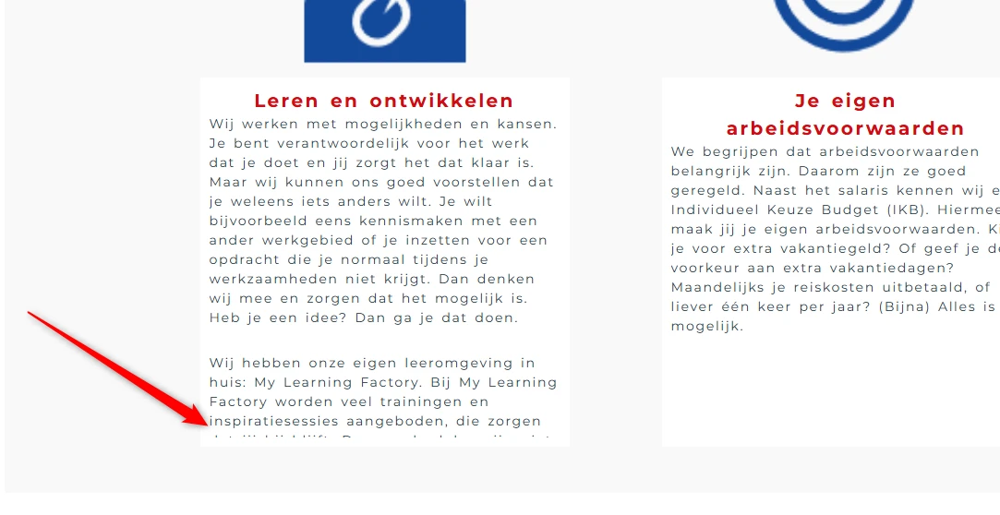
Op deze pagina wordt de tekst onder de kop “Leren en ontwikkelen” deels onzichtbaar en onleesbaar wanneer bezoekers de tekstspatiëring toepassen zoals beschreven in dit succescriterium.
Sommige bezoekers passen de weergave van de tekst aan, zodat zij de tekst beter kunnen lezen. Denk aan het vergroten van de afstand tussen regels, letters of woorden. Het gaat bijvoorbeeld om mensen met dyslexie. Als een bezoeker dit doet op de manier die in succescriterium 1.4.12 is beschreven, moet alles goed blijven werken. Bovendien moet de tekst leesbaar blijven.
Hetzelfde probleem staat op de volgende pagina’s:
Je lost dit op door de hoogte en breedte van de containers van de tekst responsief te maken. Op deze pagina lees je hoe je dit succescriterium kunt testen: https://properaccess.nl/sc-1-4-12-wat-betekent-tekstafstand/.
Link naar pagina: https://www.werkenbij.alkmaar.nl/portal-over-het-bedrijf/traineeship
Problemen met inzoomen zijn in de vorige secties beschreven.
Link naar pagina: https://www.werkenbij.alkmaar.nl/portal-over-het-bedrijf/traineeship-team-alkmaar
strong-element is gebruikt voor opmaakOp deze pagina wordt in de tekst die begint met “Voor 2025 hebben wij weer…” het strong-element onjuist gebruikt voor opmaak. Hele zinnen zijn in een strong-element geplaatst om ze vet te maken.
Het strong-element heeft een semantische waarde: het geeft een bepaalde betekenis aan de tekst die erin staat. Dit element geeft aan dat de tekst extra nadruk moet krijgen. Om die reden kun je dit element beter niet gebruiken om alleen een visueel effect te bereiken (vetgedrukte tekst).
Verwijder de onnodige strong-elementen en gebruik CSS om de tekst vet te maken. Je kunt ook met een <b>-element tekst vetgedrukt maken.
Op deze pagina staat onder “Het laatste contract: looptijd tot en met 2.5 jaar en verder” een tekstblok met twee alinea’s dat onjuist is gemarkeerd als één p-element.
Visueel lijkt de tekst uit twee alinea's te bestaan: blokjes tekst met witruimtes ertussen. Deze structuur moet ook in de code staan.
Een vergelijkbaar probleem staat op pagina https://www.werkenbij.alkmaar.nl/vacaturebeschrijving/griffiemedewerker-raadsondersteuner bij de teksten onder de koppen “Over de functie” en “Over de kandidaat”.
Plaats elke alinea in een eigen p-element. Het aantal alinea’s dat je visueel ziet, moet dus gelijk zijn aan het aantal p-elementen in de code.
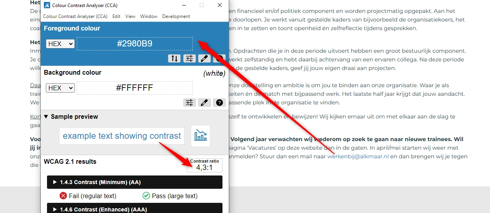
In de tekst op deze pagina staat de blauwe (#2980B9) tekst “werkenbij@alkmaar.nl” op een witte achtergrond. De contrastratio is te laag: 4,3:1.
Deze tekst is kleiner dan 24px en niet vetgedrukt, daarom moet het contrast minimaal 4,5:1 zijn.
Vacatures Link naar pagina: https://www.werkenbij.alkmaar.nl/vacaturebeschrijvingen/vacaturebeschrijvingen-outsite-v2
alt-attribuut ontbreekt)Op deze pagina staat onder de kop “Stageplaatsen bij de Gemeente Alkmaar” een afbeelding die met een img-element is opgenomen, maar het alt-attribuut ontbreekt.
Een img-element moet altijd een alt-attribuut hebben. Bij een decoratieve afbeelding die geen betekenis overdraagt, laat je dit attribuut leeg. Dan staat er alt="". Bij een informatieve afbeelding voeg je een duidelijke beschrijving van de afbeelding toe.
Voeg het alt-attribuut toe aan het img-element. Bij een decoratieve afbeelding laat je de waarde leeg, bij een informatieve afbeelding voeg je een duidelijke alternatieve tekst toe.
strong-element in plaats van kop-element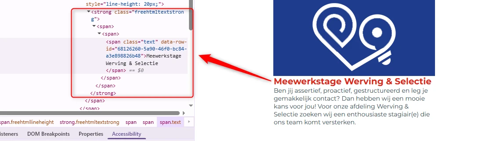
Op deze pagina is de tekst “Meewerkstage Werving & Selectie” visueel een kop, maar het h-element ontbreekt. Het strong-element wordt gebruikt om het er als een kop uit te laten zien.
Het strong-element is niet bedoeld om koppen mee te markeren. Je moet dat altijd doen met een kop-element, zoals h2. Koppen gebruik je om een tekst te structureren. Alleen als je ze als kop markeert met een kop-element, begrijpt hulpsoftware die betekenis. Het strong-element gebruik je wel als je nadruk wilt geven aan enkele woorden of een zinsdeel.
Een vergelijkbaar probleem staat op pagina https://www.werkenbij.alkmaar.nl/portal-over-het-bedrijf/traineeship-team-alkmaar bij koppen zoals “Het eerste contract: looptijd 7 maanden”, “Het tweede contract: looptijd 1.5 jaar” en “Het laatste contract: looptijd tot en met 2.5 jaar en verder”, en op pagina https://www.werkenbij.alkmaar.nl/vacaturebeschrijving/beleidsmedewerker-babw bij koppen zoals “24 - 36 uur”, “Over de functie”, “Over de kandidaat” en andere.
Verwijder het strong-element en gebruik de juiste kop-elementen om deze koppen te markeren, zoals h2 of h3. Dit element wordt vaak toegevoegd met een knop “B” in een tekstbewerker.
Onze rapporten zijn anders. Bij het bespreken van de gevonden problemen volgen wij niet de structuur van de norm, maar die van jouw website of app. Hierdoor kun je gewoon per pagina of scherm aan de slag gaan. Wel zo makkelijk! Je vindt verderop een overzicht van alle pagina’s met problemen.
We geven je bij elk gevonden issue een paar voorbeelden, maar niet een complete lijst. Controleer zelf of het probleem ook nog op andere plekken voorkomt. Zie het rapport als een leidraad.
Dit onderzoek laat zien in hoeverre de website op dit moment voldoet aan WCAG 2.2, niveau A en AA. WCAG staat voor Web Content Accessibility Guidelines. Dit is de internationale norm voor digitale toegankelijkheid. De Europese norm EN 301 549 bevat alle eisen van WCAG op niveau A en AA.
In dit rapport hebben we korte beschrijvingen van de succescriteria uit de norm opgenomen, met een algemene uitleg erbij. Wil je ze helemaal lezen? Bekijk dan de documentatie van WCAG.
We gebruiken de onderzoeksmethode WCAG-EM van het W3C. Het proces ziet er als volgt uit:
Het grootste deel van het onderzoek doen we met de hand. Voor een deel van de toegankelijkheidseisen gebruiken we automatische tools als ondersteuning, zoals axe-core en Chrome Developer Tools.
Dit rapport helpt je om de toegankelijkheid van je website te verbeteren. Maar let op: het is geen definitieve, volledige lijst van alle aanwezige toegankelijkheidsproblemen. Dat zit zo:
Ten eerste is het onderzoek gebaseerd op een steekproef. Die is op een betrouwbare manier genomen, en de meeste problemen zullen daardoor zeker aan het licht komen. Toch kan een probleem net buiten de steekproef vallen. Bij een volgend onderzoek kan het wel ontdekt worden.
We beoordelen vanuit het principe van falsificatie. Dat houdt in dat we proberen te bewijzen dat iets niet waar is, in plaats van te bevestigen dat het klopt. ‘Voldoet’ betekent daarom dat we geen reden hebben gevonden om een punt af te keuren. Maar als we later wél een reden vinden, kan het alsnog worden afgekeurd.
Het komt voor dat de beoordeling van een succescriterium op detailniveau verandert. De norm beschrijft namelijk niet élk mogelijk scenario. Samen met andere onderzoeksbureaus overleggen we hoe we met bepaalde situaties omgaan. Zo kan iets dat nu wordt afgekeurd, soms bij een volgend onderzoek worden goedgekeurd en andersom.
Ten slotte kan het gebeuren dat bij het oplossen van een probleem onbedoeld een nieuw toegankelijkheidsprobleem ontstaat. Dat komt dan bij een volgend onderzoek pas naar voren.
Alle gevonden toegankelijkheidsproblemen staan onder Gevonden problemen. Je kunt de bevindingen filteren op:
Je kunt je voortgang op twee manieren bijhouden:
Bij elke bevinding verschijnt een link-icoon wanneer je er met de muis overheen gaat. Klik op dit icoon om de directe link naar die bevinding te kopiëren. Je kunt deze link plakken in een e-mail of chatbericht, bijvoorbeeld om een vraag te stellen aan Proper Access over een specifiek punt.